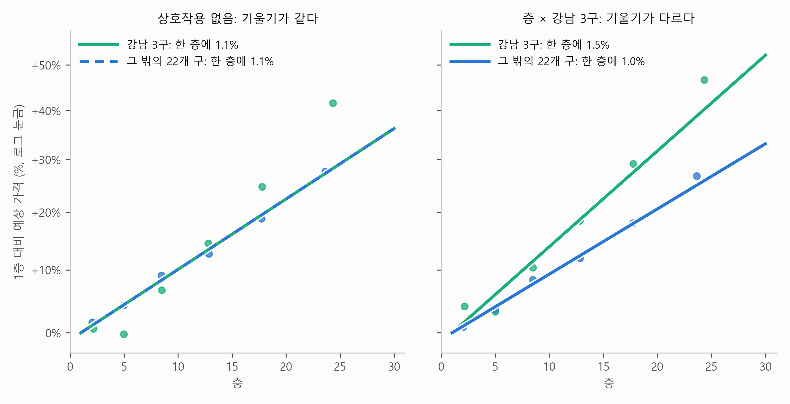

4. 효과가 집단마다 다를 때 — 상호작용#
앞 절의 그림 3-1에서 25개 구의 직선은 모두 평행했습니다. 구 더미는 직선을 위아래로 옮길 뿐 기울이지 않기 때문입니다. 이것은 이 장 첫머리의 보고서가 쓴 회귀식이 하나의 가정을 깔고 있다는 뜻입니다. 면적 1%의 효과도, 한 층의 효과도 어느 구에서나 똑같다는 가정입니다. 표 2-1의 “한 층 높으면 +1.1%”는 강남구에서도 도봉구에서도 1.1%라는 말입니다.
정말 그럴까요? 이 절은 보고서 밖으로 한 걸음 나가, 보고서의 회귀식에 없는 분석을 하나 해 봅니다. 한 층의 효과가 강남 3구(강남구, 서초구, 송파구)와 그 밖의 구에서 같은지 따져 보는 것입니다.
미리 답부터 말하면, 같지 않습니다. 한 층의 효과가 강남 3구에서는 1.5%, 그 밖의 구에서는 1.0%입니다. 이렇게 한 변수의 효과가 다른 변수에 따라 달라지는 것을 상호작용(interaction)이라고 부릅니다. 상호작용은 두 변수를 곱한 변수를 회귀식에 하나 더 넣어서 잡아냅니다. 이 절이 끝나면 그 곱한 변수가 무슨 일을 하는지, 그 계수를 어떻게 읽는지 알게 됩니다.
호텔 방의 전망 값#
호텔 방값을 생각해 봅시다. 높은 층의 방은 대개 조금 더 비쌉니다. 전망이 좋고 조용하기 때문이죠. 그런데 높은 층이 더 비싼 정도는 호텔마다 다릅니다. 바닷가 호텔에서는 높은 층에 오를수록 바다가 탁 트여서, 높은 층 방이 훨씬 비쌉니다. 빌딩 숲 한가운데 있는 시내 호텔에서는 높은 층에 올라도 창밖이 옆 건물이라, 높은 층이라고 크게 비싸지 않습니다.
이때 “높은 층이면 얼마 더 비싼가”라는 질문에 하나의 답은 없습니다. “어느 호텔이냐에 따라 다르다”가 답입니다. 층의 효과가 호텔의 종류에 따라 달라지는 것입니다. 이것이 이 절 전체를 꿰는 한 문장입니다.
한 변수의 효과가 다른 변수에 따라 달라지면, 그것이 상호작용이다.
곱한 변수 하나 — 상호작용 항#
아파트로 돌아오겠습니다. 강남구, 서초구, 송파구를 하나로 묶은 “강남 3구에 있는가?” 스위치를 만듭니다. 강남 3구의 거래면 1, 그 밖의 구면 0인 더미 변수입니다. 그리고 층과 이 스위치, 두 개의 변수를 곱한 변수를 새로 만들어 회귀식에 더합니다.
여기서 \(\cdots\)는 면적, 연식, 구 더미처럼 보고서의 회귀식에 원래 있던 항들입니다. 새로 붙은 것은 \(h \times (\text{층} \times \text{강남3구})\) 하나뿐입니다. 강남3구 스위치 자체는 따로 넣지 않습니다. 구 더미 안에 강남구, 서초구, 송파구 스위치가 이미 들어 있어서, 따로 넣으면 같은 정보가 두 번 들어가기 때문입니다.
이 곱한 변수가 무슨 일을 하는지는 스위치에 0과 1을 넣어 보면 보입니다. 두 경우를 차례로 보겠습니다.
먼저 그 밖의 구에 있는 아파트입니다. 스위치가 꺼져 있으니 강남3구 = 0이고, 곱한 변수는 층 × 0 = 0이 됩니다. 몇 층이든 0이니 이 항은 사라지고, 회귀식에서 층이 들어간 부분은 \(b \times \text{층}\) 하나만 남습니다. 같은 조건에서 10층 아파트와 11층 아파트를 비교하면 (로그)가격 차이는 \(b\)입니다. 곧 그 밖의 구에서 한 층의 효과는 \(b\)입니다.
다음은 강남 3구에 있는 아파트입니다. 스위치가 켜져 있으니 강남3구 = 1이고, 곱한 변수는 층 × 1 = 층, 곧 층 수 그대로가 됩니다. 이번에는 층이 들어간 부분이 둘이고, 둘을 합치면 이렇게 됩니다.
같은 조건에서 10층 아파트와 11층 아파트를 비교하면 (로그)가격 차이는 \(b + h\)입니다. 곧 강남 3구에서 한 층의 효과는 \(b + h\)입니다.
둘을 나란히 놓으면 그 밖의 구에서는 한 층에 \(b\), 강남 3구에서는 한 층에 \(b + h\)입니다. 그러니 \(h\)는 강남 3구에서 한 층의 효과가 그 밖의 구보다 얼마나 더 큰가를 말합니다. \(h\)가 0이면 두 곳에서 한 층의 효과가 같고, \(h\)가 양수이면 강남 3구에서 한 층의 효과가 더 크고, 음수이면 더 작습니다. 더미 변수 혼자서는 직선을 위아래로만 옮겼지만, 더미 변수와 층을 곱한 변수는 이렇게 직선의 기울기, 즉 한 층 높아질 때마다 가격이 오르는 정도를 바꿉니다. 이렇게 곱의 형태로 들어가는 변수를 상호작용 항이라고 부릅니다.
결과 읽기#
보고서의 회귀식에 상호작용 항 하나를 더해 회귀분석을 다시 했습니다. 표 4-1은 상호작용 항이 없을 때와 있을 때를 나란히 놓은 것입니다.
표 4-1. 상호작용 항을 더하기 전과 후 (다른 변수는 보고서의 회귀식과 같다)
상호작용 없음 (보고서) |
상호작용 있음 |
|
|---|---|---|
층의 계수 \(\hat{b}\) |
0.0107 |
0.0099 |
층 × 강남3구의 계수 \(\hat{h}\) |
0.0046 (표준오차 0.0006, \(t\)값 8.2) |
|
한 층의 효과: 그 밖의 22개 구 |
1.1% |
1.0% |
한 층의 효과: 강남 3구 |
1.1% |
1.5% |
\(R^2\) |
0.7193 |
0.7196 |
표에서 보듯이 상호작용 항을 넣자 하나였던 층의 효과가 둘로 갈라집니다. 그 밖의 구에서는 \(\hat{b}\) = 0.0099, 곧 한 층에 1.0%입니다. 강남 3구에서는 \(\hat{b} + \hat{h}\) = 0.0099 + 0.0046 = 0.0145, 곧 한 층에 1.5%입니다. 강남 3구의 한 층 효과가 그 밖의 구의 1.5배쯤인 셈입니다(1.5% 대 1.0%).

그림 4-1. 1층과 비교한 예상 가격(다른 조건은 같을 때, 세로축은 로그 눈금). 왼쪽 패널은 상호작용 항이 없는 보고서의 회귀식, 오른쪽 패널은 상호작용 항을 더한 회귀식이다. 초록은 강남 3구, 파랑은 그 밖의 22개 구이고, 점은 층 구간마다 실제 가격이 선의 예상보다 얼마나 높았는지(잔차)를 평균 내어 선 위아래에 찍은 것이다.
그림에서 보듯이 왼쪽 패널에서는 두 선이 하나로 겹칩니다. 앞 절에서는 구 더미가 직선을 위아래로 옮겼는데 여기서 겹치는 것은, 설명을 위해 세로축을 바꿨기 때문입니다. 이 그림에서 세로축은 가격 자체가 아니라, 강남 3구는 강남 3구의 1층보다, 그 밖의 구는 그 밖의 구의 1층보다 몇 % 비싼가입니다. 그래서 강남 3구가 원래 더 비싼 만큼은 그림에서 빠지고, 한 층마다 오르는 정도만 남습니다. 상호작용 항이 없으면 한 층의 효과가 어디서나 같으니 선도 하나뿐입니다. 그런데 점을 보면, 높은 층으로 갈수록 강남 3구의 초록 점이 선보다 위로 벗어납니다. 회귀식이 강남 3구의 높은 층을 실제보다 낮게 예상하고 있다는 신호입니다. 오른쪽 패널에서는 두 선이 1층에서 출발해 서로 갈라지고, 초록 점들이 초록 선을 잘 따라갑니다. 20층을 1층과 비교하면 그 밖의 구에서는 21%, 강남 3구에서는 32% 비쌉니다.
믿을 만한 차이인가, 큰 차이인가#
상호작용 항의 \(t\)값은 8.2입니다. 앞 절에서 보았듯이 \(t\)값이 2만 넘어도 우연으로 보기 어려운데, 8.2이면 “한 층의 효과가 강남 3구와 그 밖의 구에서 다르다”는 것은 우연이 아니라고 봐도 됩니다.
그런데 \(R^2\)은 0.7193에서 0.7196으로 거의 그대로입니다. 차이가 분명히 있는데도 설명력은 왜 늘지 않았을까요? 상호작용이 바꾸는 것이 가격 차이의 작은 부분이기 때문입니다. 서울 아파트 가격 차이의 대부분은 면적과 구가 설명하고, 층은 그중 일부를 설명하며, 상호작용은 다시 그 층의 효과를 두 갈래로 나눈 것뿐입니다. “믿을 만한 차이”와 “가격을 크게 바꾸는 차이”는 다른 질문입니다. 단순회귀분석 장에서 “\(p\)값이 작다는 것은 관계가 있다는 뜻이지, 관계가 크다는 뜻이 아니다”라고 했던 것과 같은 이야기입니다.
그리고 왜 강남 3구에서 한 층의 효과가 더 큰지는 이 계수가 말해 주지 않습니다. 호텔의 바다 전망처럼 한강이나 공원 조망 때문일 수도 있고, 강남 3구의 고층 아파트에 다른 특징이 있기 때문일 수도 있습니다. 계수는 차이가 있다는 것과 그 크기를 말할 뿐입니다.
보고서의 1.1%를 다시 읽으면#
이제 보고서의 “한 층 높으면 1.1% 높다”를 다시 읽을 수 있습니다. 이 1.1%는 서울 전체의 평균값입니다. 상호작용을 넣은 결과와 비교하면, 강남 3구에서는 조금 작게, 그 밖의 구에서는 조금 크게 잡은 숫자입니다. 보고서가 틀린 것은 아닙니다. 보고서의 회귀식은 “한 층의 효과는 어디서나 같다”고 가정하고 그 가정 안에서 가장 잘 맞는 값을 찾았을 뿐입니다. 상호작용은 그 가정을 풀어 본 것입니다.
어떤 상호작용을 넣어 볼지는 분석하는 사람이 정합니다. 층과 강남 3구 말고도 면적과 구, 연식과 구처럼 짝을 바꿔 가며 물어볼 수 있습니다. “이 효과가 저 조건에 따라 달라질까?”라는 질문을 먼저 세우고, 그 질문을 곱한 변수로 바꿔 넣는 것이 상호작용 분석입니다.
💡 팁: 회귀분석이 알아서 모든 짝을 찾아 주지는 않습니다. AI에게 다중회귀분석을 맡길 때, 효과가 집단마다 다를 것 같은 짝이 있으면 직접 물어보세요. 예를 들어 “층의 효과가 강남 3구와 나머지 구에서 다른지 상호작용 항을 넣어 확인해 줘”처럼요. AI는 기본적으로 상호작용이 없는 회귀식을 내놓는 경우가 많습니다.
요약 — 이 절의 물음과 답
한 층의 효과는 강남 3구와 그 밖의 구에서 같을까? 같지 않다. 한 층 높으면 강남 3구에서는 1.5%, 그 밖의 구에서는 1.0% 비싸다. 이렇게 한 변수의 효과가 다른 변수에 따라 달라지는 것을 상호작용이라고 한다.
효과가 집단마다 다르다는 것은 회귀식에 어떻게 넣을까? 층과 “강남 3구에 있는가?” 스위치를 곱한 변수를 하나 더 넣는다. 이 변수는 스위치가 꺼진 그 밖의 구에서는 0이 되어 사라지고, 스위치가 켜진 강남 3구에서만 살아나 한 층 높아질 때마다 가격이 오르는 정도를 바꾼다. 이렇게 곱의 형태로 들어가는 변수를 상호작용 항이라고 하고, 그 계수는 강남 3구에서 한 층의 효과가 그 밖의 구보다 얼마나 더 큰가를 말한다.
그러면 보고서의 “한 층 높으면 1.1%”는 틀린 것일까? 틀린 것은 아니다. 보고서의 회귀식은 한 층의 효과가 어디서나 같다고 가정하고 그 가정 안에서 가장 잘 맞는 값을 찾았으므로, 1.1%는 서울 전체의 평균값이다. 상호작용은 그 가정을 풀어 본 것이다.
남는 질문#
이 절에서 푼 가정은 “효과가 어느 집단에서나 같다”는 것이었습니다. 그런데 보고서의 회귀식을 다시 보면, 연식만 변수가 두 개입니다. 연식과 연식²이 함께 들어가 곡선을 그립니다. 왜 연식은 변수 하나로 넣지 않았을까요? 직선으로 부족한 것은 어떻게 알아보고, 곡선은 어떻게 넣을까요? 다음 절에서 다룹니다.